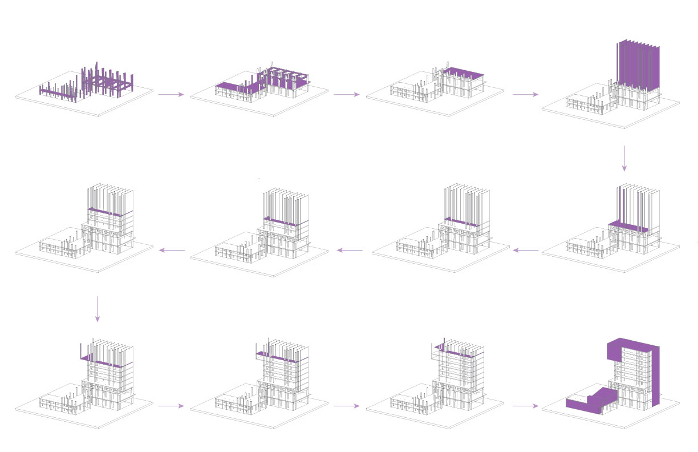
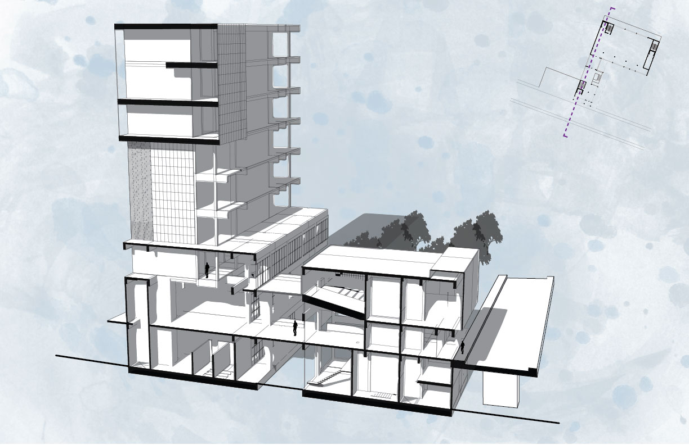

Mass Timber in the City
Multipurpose Applications for Mass Timber
Laudeman, Sara M
ARCH 8856 CR | Spring 2019 | Georgia Institute of Technology
Portman Prize Studio, Third Prize
This project brings together the public and private realms of Boston, MA . As a primary goal, the open plaza on Foundry Street invites passerby into the market and gallery spaces, encouraging visitors to partake of the spatial experience and cultural programming housed within the mass timber construction.
Combining housing above and community space below, this project pulls 4th Street and Foundry Street together via a set of layers composed of spaces and building volumes. These layers serve to create overlaps and interactions, creating spaces of opportunity, conditions of entry, and locations of friction. Interactions in these spaces between public market and private artists’ residences will bridge the gap between the edge of 4th Street and the boundaries of Foundry Street, blurring the edges of the public realm and creating a focal point for the communities in this South Boston neighborhood.
Program Requirements:
Urban Marketplace - 12,000 NSF
Artist-In-Residence Housing - 10,000 NSF
Community Spaces - 5,000 NSF
Subtotal Net Areas - 26,000 SF
Grossing Areas - 15,600 SF
Total Area - 42,600 SF
This project is about layers, levels, and crossing between them. It is about what happens on a multi-level site when a set of apparently disparate programs are combined. These stratifications happen in multiple ways: spatially in parallel with both 4th Street and Foundry Street, vertically with 4th Street serving as a datum reference, and in terms of program. The building logic stitches Foundry and 4th Streets together with an auditorium and entry onto the lobby and plaza on the 4th Street level above, while allowing a view down to the Foundry plaza and the more private gardens that serve the gallery. These connections are meant to encourage interaction from above. Pedestrian entry under the auditorium is compressed before it spills out into a vertical atrium, linking 4th Street and Foundry Street via the plaza that spills outwards.
Programatically, the gallery and the market dominate the Foundry Street level. The market is an open plan flexible space that occupies two levels, connected to 4th Street on the second level via an open air crossover. The gallery is directly underneath the 4th Street plaza and serves as a space for the artists in residence to display their work or host receptions. The garden on the west side of the site allows for a more intimate gathering space with large, operable bay doors to create a seamless transition in warm weather. The entire site is framed by the taller residential tower on the north side.
This project engages the urban context by capturing 4th Street and Foundry Street at different levels, encouraging the bridging between these two levels, and extending the influence of the site northwards towards Traveler Street. The Foundry Street plaza pulls the street into the site, allowing for pedestrians to cross down the alley between the two adjacent residential buildings, spill out of the market, or meander across the park space to the north. The 4th Street level engages pedestrian and vehicular traffic alike with the prominent display on the auditorium where it cantilevers over the street and on the urban plaza that pulls away from the traffic of 4th Street, looking down onto the garden below and back towards the city center. From 4th Street, pedestrians might pause to look over the edge to the plaza below on Foundry, creating a dialogue between the methods of occupation above and below.
In section, the interplay between spaces becomes apparent. Opposite, the sections through the gallery, lobby, and auditorium showcase the verticality of the spaces. Below, the sections demonstrate the connection between the market and housing. This verticality is displayed again in the vertical atrium beneath the auditorium.
The facade logic in this project calls upon repurposed wood siding to maximize the wood applications in the project. The delicacy of large glazing exposures accents the mass of wood and slate-gray paper composite panels that highlight the facade's vertical elements and the prominant auditorium and public space. Glazing on the south facade is shaded by the extension of horizontal CLT floor plates from the housing corridors.

